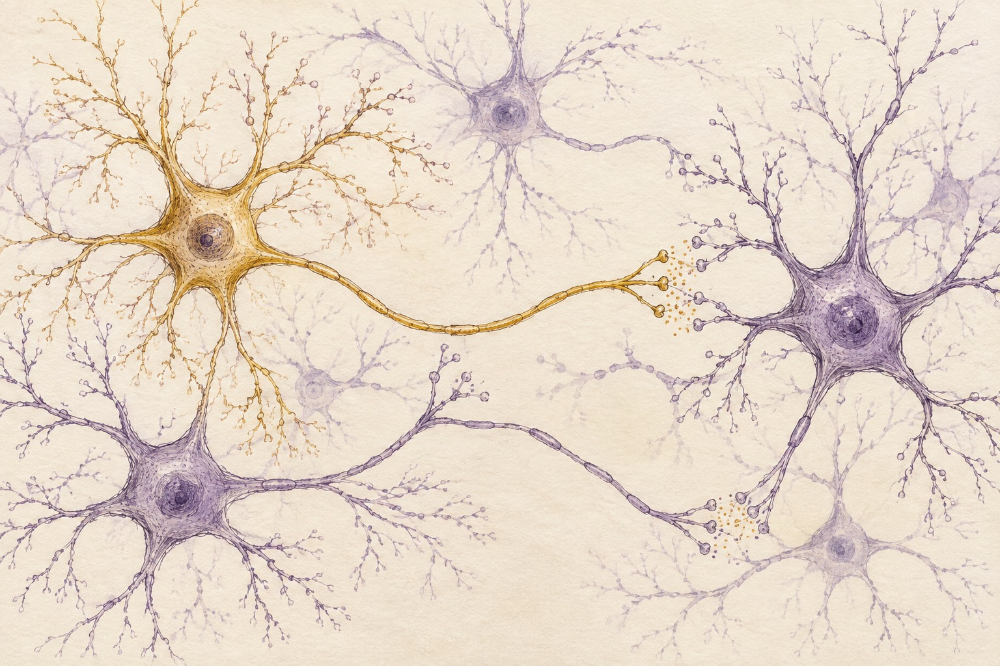

Part V
Chapter 23: The Dragon’s Circuitry
Estimated reading time: 10 min
Physiology shapes a startle, a thought, a reading of another person, and the way regulation returns. Biology gives the Dragon’s Path its ground.
Integration practice is a conscious collaboration with biology, not a transcendence of it.
The Brain at Work
Experience begins in circuitry: perception, memory, emotion, and body state arise through interacting brain networks. Neural wiring branches and re-branches in fractal-like patterns, more like lightning or river deltas than a straight line. In mythic shorthand, the nervous system is a biological antenna, a living body tuned by contact, threat, memory, and resonance with the relational field we call the Entangled Firmament.
The key regions can be read in two dialects: biology (amygdala, prefrontal cortex, hippocampus, insula) and myth (a primal sentinel or Serpent coil, a Sage-like pause, a memory weaver, an inner sensor). Biology names the mechanism; myth names the felt pattern. They are translations, not equations: the amygdala does not simply “equal” the Serpent, and no single circuit simply “is” an archetype.
Modern neuroscience leans toward overlapping, distributed networks rather than the older “Triune Brain” model of stacked layers. The reactive vs. reflective contrast remains useful because it matches the subjective experience of being pulled between Serpent-like impulse and Sage-like regulation. Used this way, the map helps train attention and choice while biology stays biology.

The Amygdala
The amygdala sits deep within the temporal lobes. It helps the brain mark emotional salience, especially threat cues and fear learning, while also contributing to anger and pleasure/reward processing.
When the system reads danger, the amygdala helps set the body’s fight-or-flight response in motion.
Here the body carries a primal filter, coiled and ready to strike at perceived danger: living circuitry for the Form Body’s threat reflex braided with the Eros Body’s surge of charge. In mythic shorthand, this can feel like a primal sentinel or the Serpent coiling.
In trauma states, the amygdala can become hyper-reactive, biasing perception toward threat.
Mindfulness and orienting can lower the felt threat enough for regulation and safety cues to return.
The Prefrontal Cortex
The prefrontal cortex gives the organism a longer reach: planning, decision-making, emotion regulation, recognition of its own state, and the reading of complex social signals.
When prefrontal regulation is available, we can slow impulses shaped by reactive networks, including the amygdala.
In lived terms, this is the capacity to pause, widen options, and hold Serpent energy long enough for a more deliberate next step. In archetypal shorthand, this capacity resonates with the Sage’s pause.
Repeated practice can help make pause, clarity, and steadier action easier to reach, though repetition alone does not guarantee that access under pressure.
The Hippocampus
The hippocampus helps form and retrieve memories. It gives experience a where and when, weaving events into the world of personal story.
Trauma can disrupt this contextualizing work, so past events return as fragments that feel intensely present, as if they are happening now.
In mythic shorthand, the hippocampus is a memory weaver: a story-stitcher that helps return the past to the past.
One strand of healing is helping memory regain sequence and context, so fragmented experiences can be re-threaded into a coherent, livable narrative.
The Insula
The insula gathers signals from the outer senses and the inner body. Through interoception, it helps shape subjective feeling states and body awareness.
Within wider networks, the insula helps bodily signals contribute to felt emotion and self-awareness. In mythic shorthand, it serves as an inner sensor: not a solitary felt-sense organ, but part of how Form Body sensation, Eros Body charge, and Soul Body meaning become mutually legible.
As interoceptive awareness sharpens, the body’s quieter signals become easier to notice.
This gives intuition and embodied discernment more information to work with. Felt experience becomes usable guidance rather than background noise when awareness and choice test it before action follows.
The Storyteller’s Throne
Within the mind, narrative systems rehearse the past, anticipate the future, and stitch the tale of “me” across time. The Storyteller’s Throne pictures this narrative work.
Neuroscience locates much of that narrative stitching in the Default Mode Network (DMN), a network often active during rest, mind-wandering, and self-referential thought.
Here, ego is not a villain to destroy or an illusion to mock. Recursive stabilization names the brain’s moment-to-moment loop of story and prediction. It keeps experience coherent enough to live inside. When that loop runs fast and unexamined, attention can curl back on itself until “me” starts to feel like a fixed boundary rather than a living process: the Strange Loop of the “I”.
The DMN is one major circuit in the story-layer of that stabilization.
From this lens, trauma can be understood as a locked loop—a recursion that has lost its ability to update inputs. The system keeps sampling yesterday’s danger and writing it into today’s story, even when the present has changed. Healing restores the loop’s ability to update. Titration means approaching difficult experience in smaller, tolerable amounts. This can leave more room to notice present conditions and take in trustworthy contact, bringing new information into the next iteration.
Under strain, the nervous system prioritizes orientation and survival over a perfectly literal account of the present. A protective story may be coherent enough to keep going without being an accurate description of what is happening now.
When interoceptive overwhelm outruns tolerable feeling, the narrative system often tries to stabilize experience by generating a coherent protective story. The body surges first; the narrative arrives to explain the surge and make it livable enough to continue.
One deliberate shift can interrupt this automatic stabilization and give the next story-loop truer material. It does not kill the Storyteller; it helps the loop stabilize around what is actually present now. A breath before you speak. A felt sense in the belly. A clear boundary. Small inputs can change the next turn of the loop.
Studies of meditation and other altered states report changed DMN activity, sometimes alongside experiences people describe as ego-softening or a heightened sense of interconnectedness.
When the usual self-story loosens, its boundaries can feel less absolute. In contemplative language, the shift can be experienced through the Void Body as a moment of contact with the Void.
Interconnectedness may feel more immediate in those moments, not because biology proves a cosmology, but because the usual narrative filter has loosened.
These regions form interacting networks rather than isolated parts. Practice and recovery may change communication between them, supporting prefrontal regulation, contextual memory, and embodied awareness through insula-linked interoception. Grounded in this circuitry, participation reads the field through bodily signal, checks resonance against context, and acts with more choice.
Neuroplasticity: How Practice Changes the Circuit
Neuroplasticity is the brain’s lifelong ability to reorganize its structure, function, and connections in response to experience.
It is one biological reason practice matters on the Dragon’s Path.
Over time, repeated patterns of thought, feeling, and action can leave an imprint, reshaping neural pathways. The mechanism is neutral: what repeats becomes easier, whether it protects life, repeats yesterday’s danger, or opens a new path.
Mindfulness research reports associations with measurable functional changes and more variable structural findings in regions linked to attention, interoception, and memory; reported outcomes also include quieter threat reactivity. Repetition can make qualities we associate with the Sage more available under pressure: pause, presence, clarity.
Traumatic experiences can sensitize threat responses and disrupt contextual memory. Tolerable, repeated experiences of safety, agency, and connection may help the nervous system update. Sleep, supportive relationships, therapy, and somatic practice can help new responses take hold and remain available under pressure.
The Autonomic Nervous System and Polyvagal Theory
Our capacity for focused practice, connection, and transformation is shaped by the state of our autonomic nervous system (ANS), which regulates involuntary functions such as heart rate, digestion, and respiration.
Often, before the mind explains anything, the body has already tilted toward connection, mobilization, or shutdown. Autonomic activity helps shape that experience alongside brain networks, context, and history.
Stephen Porges’s Polyvagal Theory offers a widely used map of these state shifts. Its proposed links between social engagement, defensive responses, and specific vagal pathways remain disputed.1 Here, connection, mobilization, and shutdown are descriptions for tracking experience, not nerve activity a person can identify by feeling alone.
Connection and Contact
Often described as the nervous system’s “safe social engagement” mode, this state makes connection and co-regulation more available through voice, face, and breath.
In this state, breathing often steadies, vigilance softens, and social contact becomes easier. This can support trust, learning, and integration on the Dragon’s Path.
Sympathetic Mobilization
This is the body’s accelerator. Activated by perceived threat, it triggers the adaptive fight-or-flight response: increased heart rate, rapid breathing, stress hormones, and narrowed perception.
The surge is essential for acute survival. When it becomes chronic, stress and anxiety can start to feel like the body’s default weather.
Immobilization and Shutdown
Under overwhelming threat, especially when action feels impossible, a person may become still, feel numb, or go blank. These experiences sometimes overlap with dissociation or collapse. No single mechanism is established for the whole group.
Stillness or withdrawal can serve protection under unbearable load. Persistent numbness, hopelessness, or loss of contact needs attention beyond this shorthand.
Navigating the Dragon’s Path means learning to recognize our state and widen our range rather than live permanently in one “best” state. Greater range lets us mobilize when action is needed, come out of shutdown gently, and restore regulation and contact when it is available.
Regulation is active. Simple breath regulation and somatic awareness can shift physiological state, giving deeper work and connection a steadier floor.
Spectrum of Self-Presence: Reading Your State
As bodily state and conditions change, your self-presence can shift with them. On the survival end of the Spectrum of Self-Presence, experience feels numb or flooded—either distant and unreachable, or so overwhelming that it is hard to find a stable “I” inside it. In the middle, you may feel blended with a reaction (“I am anger / panic / shame”), even when some part of you knows more is happening.
The turning point is differentiation: the nervous system has enough safety to unblend, so you can say, “A part of me is terrified,” while another part can witness and choose. From there, presence can deepen into witnessing, self-led, and even essence-level presence—states where the Serene Center holds the charge and the Axis of Being feels coherently alive.
Practically, this spectrum is not a moral ladder but a reading on capacity. You can track it using the Focus–Flow–Feeling Check (see the Checklists and Materials appendix). When Focus narrows, Flow becomes rigid, and Feeling contracts, you have slid toward the survival end of the spectrum. Let that reading set the pace: simplify when capacity narrows; continue only when enough witnessing remains to choose.
Mirror Neurons and Embodied Empathy
Connection also has biology. Mirror neurons were first observed in primates; in humans, researchers describe analogous action-observation systems rather than a single settled mechanism. These systems may contribute to imitation and social understanding, while empathy, bonding, and co-regulation draw on wider networks of perception, body state, memory, attachment, and context.
This wider social nervous-system resonance helps explain why community and co-regulation matter biologically, not just emotionally: our nervous systems are tuned to one another, and a regulated room, a grounded therapist, or a coherent group can help restore regulation and contact. A room with enough calm can change state before advice lands.
The Mind-Body Feedback Loop
The conventional separation between “mind” and “body” is scientifically incomplete and practically unhelpful. They operate in a constant, bidirectional feedback loop.
Physiology shapes perception, thought, and emotion: gut state alters mood, tension colours interpretation, and physiological state shapes how easily we distinguish quieter bodily information from alarm. The loop also runs the other way: imagined danger can trigger a stress response, and placebo effects show that belief, expectation, attention, and context can alter symptoms through state, behaviour, and regulation. Practice engages that coupling deliberately: where you place attention, how you appraise sensation, and what action you repeat all change the body’s next signal.
State gives the work a practical handle. We can work top-down (mind to body) or bottom-up (body to mind), and the Dragon’s Path uses both.
Knowing the circuit gives the work a place to begin: attending to bodily state can reveal what the story alone leaves out. As threat reactivity downshifts, interoceptive listening sharpens, and prefrontal regulation returns, alarm becomes easier to distinguish from quieter bodily information. This does not reduce experience to biology; it makes biology a doorway, where the flesh supports the work without containing all of it.
For the current dispute over the theory’s physiological and evolutionary premises, see Paul Grossman et al., Why the Polyvagal Theory Is Untenable, and Stephen W. Porges’s response, When a Critique Becomes Untenable, both in Clinical Neuropsychiatry (2026).↩︎